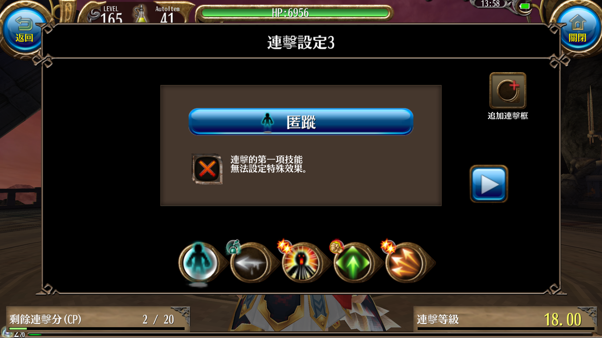
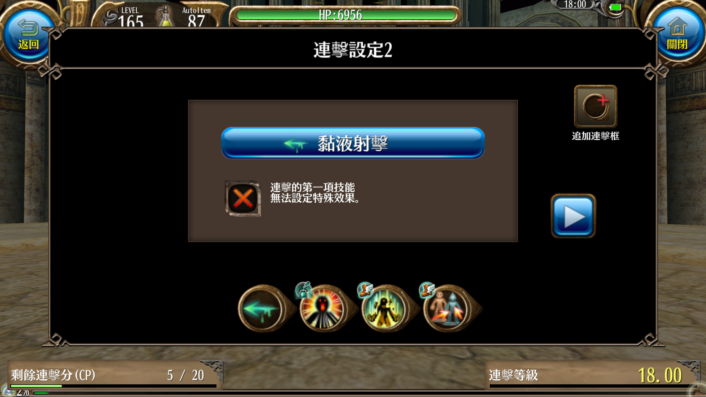
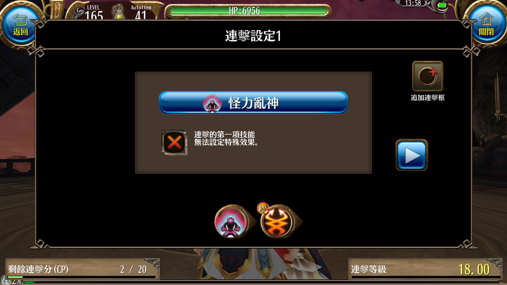

哈喽~大家好 我是夜夜(揮手 來找新王拍照

因應貓貓的要求我也來寫一篇關於弓手的文章啦~
不過我還玩沒多久所以並不是很清楚其他人是怎麼玩的
所以我就以我自己的腳色來做介紹，並解釋我點這些技能的理由
我會將內容分成3個大主題 弓手基本要點&150前和150後!!另外會再針對其他職業的增幅技能做一些介紹
原因是有了4階技能後的玩法會整個大改變~所以再用等級做個區分
＊另外提醒大家~這篇主要是針對"純弓手"不包含練匠的喔!
弓手基本要點
- 首先來介紹弓手會點的幾個能力!
- DEX:玩弓必點，點1增加3atk 通常都是先滿dex再考慮點其他的
- STR:對於輸出來說第二重要的能力，點1增加1atk 並增加少量爆傷
- CRT:增加爆擊率，主要是為了達到100%爆擊
- VIT:可以增加血量!!增加存活率!!活著才有輸出!!斟酌點一些就好
給大家參考我的配點~

我的弓手走的是極致輸出路線，所以並沒有點vit增加生存率
點滿DEX後，達成百爆需求就全部都點STR了
爆擊率
之前有人問過我爆率怎麼算，所以我就在這裡也順便說明一下~
公式是:暴擊率公式:（25+ CRT /3.4）*（100 + 暴擊率+N%）% + 暴擊率+N+ 技能補正
你說看不懂?沒關係!!我也看不懂
其實不難的啦~看我算一次就知道了!就拿我的小弓來舉例吧~
秘訣就是把"爆擊率+n"和"爆擊率+n%"分開
請看以下的裝備圖~


CRT為紅色
爆擊率+n%為橘色
爆擊率+n為藍色
所以我的爆率是 (25+4/3.4)*(100+15(法袍)+4(卦莫石))%+16(弓)+15(法袍)+20(帽子)+8(獅將石)+5(魔炮石)+5(好戰分子的爆擊率提升點滿)=100.15
剛好達到百爆~
基本裝備方向
弓手的優勢就在於靈活和射程，並且擁有瞬間的爆發力。為了讓這瞬間的傷害能提高，最基本的當然是提高底攻。再來就是爆擊傷害和爆擊率。
所以裝備的付魔基本上都是圍繞著"atk%" & "DEX% "& "爆擊率" & "爆擊傷害"這幾個數值 關於這方面可以參考上面爆擊率部分的裝備圖
另外，對於弓矢玩家來說。屬性矢是一個非常重要的裝備
有了相剋屬性就會有多15%的傷害，我不是很會算傷害頭會痛。但是我測試過用124攻無屬的矢打得並不會比5攻剋屬的矢打得還痛，由此可見屬性加成多麼的重要。所以要完弓務必要把6屬攻矢集齊
未來如果有預算當然可以再更進一步的製作對屬衣和對屬弓，不過那些裝備需要花費的眾神幣不是普通的多。所以慢慢來就好了。
150前技能概略
現在來到了介紹技能的部分~我會介紹在只有3階技能的狀況下，不同的技能分別有什麼用處以及值不值得投資~
-
威力射擊:弓手的第一個技能，也是射擊技能中唯一能讓王出白圈的技能。詠唱時間略長，可放連擊加速，通常是點5路過，點10可以增加翻覆機率。
-
渦輪射擊:輸出不高，但是速度快。靈活就可以提生存率，所以我還滿喜歡把它放連擊裡面的。點5路過就可以，除非跟我一樣喜歡這個技能，不然沒有必要。
-
箭雨:刷小怪用的技能，打王時一點毛用都沒有@_@ ，點5路過即可
-
弱點狙擊:3階技能的主力輸出，點好點滿。不過這技能有蓄力時間，所以很容易在蓄力的時候吃到招
-
黏液射擊:本身沒什麼威力並且附帶遲緩效果，但是1mp而且秒發的特性使的它成為連擊起手的主因，但這個技能還是點5路過即可。
-
麻痺射擊:跟他的上一個技能一樣沒什麼威力並帶麻痺效果。但是此技能可以增加穩定度所以前期建議點滿，畢竟穩定的打出傷害才是最有效率的輸出模式。
-
煙霧彈:這排的技能其實都沒什麼威力...附帶致盲效果，不過這個技能也因為5mp的高消耗所以也被用來放進補位的連擊當中。一樣點5路過即可
-
射擊要領:增加基礎攻擊力，點滿
-
匿蹤:看完什麼方向的輸出，裝備有減仇就可以完全不用投資這個技能。而且這個技能只對直接傷害技能有效，戰吼.步步為營這類buff技能一樣會產生仇恨，在得到4階技能前是可以酌量投資一點的。
-
遠程狙擊:對於使用弱狙當主力輸出的狀況下這個技能提供了一個很好的buff，所以點滿。
-
回氣:機率回復1mp，看似沒什麼用。實則提升了不少續戰力，不少不玩弓也會特別跑來點這個技能，由此可知這個技能多好用。
連擊介紹 
我會跟大家說明我的配置思路，因為這個配置會因裝備有點不同，我的不一定適合大家，所以我提供思路給大家參考。請各位思考一下怎麼樣才能配出最適合自己的連擊
起手使用低mp的技能，如果後面補位配的好可以就用1mp打出高傷害。第2技能使用高mp的技能來補位，第3技能隨便塞一個快速又低耗的技能，因為補位特性會使的下一項技能暫時降低威力。
第4技能就是重頭戲了，此用弱狙增幅可以完整地吃到連擊150%的效果，最後第5技能也是使用低耗技能來做結尾。因為增幅後面如果沒有技能就會增加增幅技能的消耗mp
150後技能概略
現在是介紹習得4階技能後的技能定位狀況，因為一些技能的定位會改變所以我會全部再說明一次。
-
威力射擊:定位不變
-
渦輪射擊:定位不變
-
箭雨:定位不變
-
弱點狙擊: 有了交叉火線，弱狙在原地蓄力射擊就大大提升了危險性，所以也是很多人索性不點了。不過就我在打王放交叉前會先放一發弱狙來降防，打出的數字會更漂亮，所以要點多少就見仁見智了。
-
交叉火線:作為射擊技能中最強力的輸出手段當然是點10，在蓄力中不能受到任何傷害否則會停止蓄力。但是在蓄力期間能自由走動放技能，所以在原地蓄力的弱狙才會被淘汰。
-
黏液射擊:定位不變，依然是個連擊起手好技能
-
麻痺射擊:在弱狙減少使用的狀況下增加穩定度的地位也一起變低，所以這個技能也變成了路過的技能，點5即可。當然!前提是有要點後面的技能。
-
煙霧彈:分身射手.交叉火線.弱點狙擊這幾個技能也都是4mp的高耗技能。所以煙霧彈的5mp放連擊補位優勢還在，沒有要點後面的技能可以1點出來就好。
-
斷腕擊:這個技能我也沒點過，不過依照前面的技能來看這個技能的傷害也是不高並且附帶乏力效果，這個效果並沒有什麼非常好用的用處，而且消耗高達7mp。就算放補位也不太實用，因為通常煙霧就夠用了。所以通常都不會去碰到這個技能
-
射擊要領:定位不變
-
匿蹤:匿蹤消除仇恨只限於直接傷害技能，所以對於交叉火線是沒有效果的。而弱狙也減少使用了，所以匿蹤的價值可以說幾乎沒有了，基本上不點也會有問題。
-
遠程狙擊:交叉火線算是設置型技能，嚴格來說比較偏向陷阱類。所以也吃不到距離加成，除非很在意弱狙傷害或是普攻傷害，不然也是路過即可。
-
回氣:定位不變
-
分身射手:創造一個分身，數值跟當下使用技能時的一樣。射程也和使用的武器相同，雖說傷害不高。但是回魔速度非常誇張，是個非常棒的增益技能。回魔速度快到我弱狙都懶得用連擊直接單放了。
連擊介紹 
這個連擊是在開王時放的，開王前先放分身出來回魔。就有源源不斷的魔。黏液起手可以低耗，戰吼補位稍微降低一下mp的消耗，破風和分身加速。至於為什麼要加速是因為速度越快越靈活，就可以增加閃招的時間。
放交叉前先上buff，僅此而已
其他職業增幅技能
因為我是玩純輸出類型的，所以多餘的點數都拿去投資在增幅技能上了。因此來介紹一下我點了哪些技能吧~
-
戰吼:buff atk 的劍術技能 通用性很高 只是弓手使用只有23秒
-
HP突破:增加血量上限的技能，點到10大約增加1500。建議點滿，畢竟活著才有輸出。
-
好戰份子: 這是一串技能樹，中間那條都是適合物理攻擊職業的技能所以我全部點滿了。分別是"提升攻擊力"，"強打"，"提升爆擊率"，"威嚇之力"
-
縮地法:有些王很會跑...就算是弓手也不見得追得上，所以我才點出了這個技能
-
明鏡止水:提升爆擊傷害的技能，但是只要放一次技能就會消失。所以我都是放在交叉前面，明鏡點出來只為了給交叉增傷而已。
-
怪力亂神:單人buff技能，增加atk並且給使用者灼燒效果。因為點了這個讓我被貓貓吐槽我血從來沒滿過...